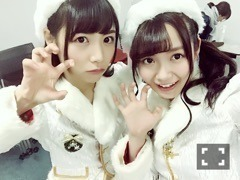

| 2016/02 08 Mon | ひめたん-0o0-その610 |
きいちゃんがお泊まり来てくれたよ♡

がおー♡
次の日も一緒にお仕事だったから
一緒に起きて
一緒におうち出ました(´｡•ω•｡`)
きいちゃんのブログ見たよ～
私もきいちゃんらぶだよ♡♡
こんなに素直で人に優しい子
いないよな～って最近改めて尊敬しました
そんなきいちゃん好き。
また来てね～！
お口あんぐり。
日曜の夜はらじらー！サンデー
前回のゲストは声優アーツに
every❤︎ing!木戸衣吹さん、山崎エリイさん
乃木坂からは桜井玲香ちゃんを
お迎えしました(^o^)
選抜発表を受けてのみなさんの
熱いメッセージがたくさん届いてたよって
スタッフさんが教えてくれました
ありがとう！
ラジオでも言った通り
気持ちは14thシングルに向いてます！
玲香は初登場でしたが
ずっと楽しみにしてくれてたと聞いて
ひめは嬉しいですo(^o^)o
玲香～ありがとう～＊
また来てね！
次回の乃木坂週、ゲストは
伊藤万理華ちゃんに決まりました。
2回目！一人では初めて！
万理華への応援メッセージお待ちしてます～

金曜日はソニレコ更新日！
2月1週目分はもう観てくれたかな？
チャンネル登録はこちらから。
本番前の取り留めのない会話を
お届けするというなんともゆるい番組。
～お知らせ～
2/6 トップエール
2/9 ボム
2/10 マーキー
2/24 Samurai ELO
2/29 ブブカ
トップエールは連載4回目。
チアダンスを習ってきました！
動画でお届けできないのが残念( ´ ･ω･ ` )
ちなみにひめの携帯に
記念としてあります、動画。
明日はボム発売日ですね
乃木坂ちゃんいっぱい出てるよ！
次回の日記でオフショット載せます～

ジャージ女子。
(＊´・ω・＊)
コメント(802)
2016/02/08 23:42